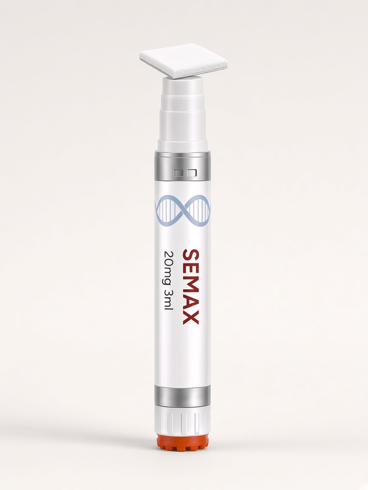
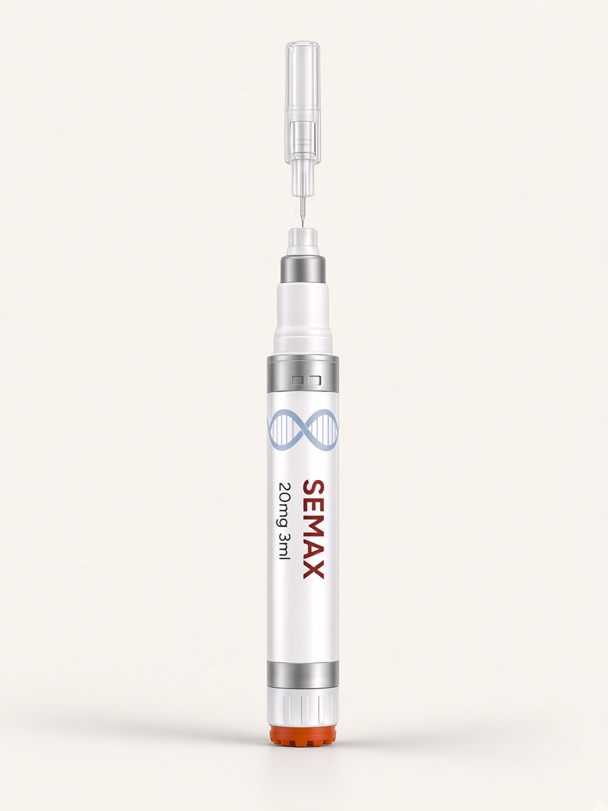
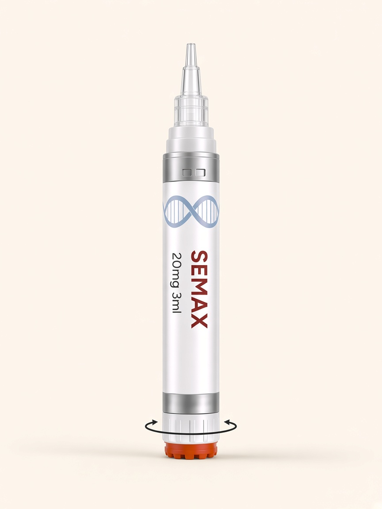
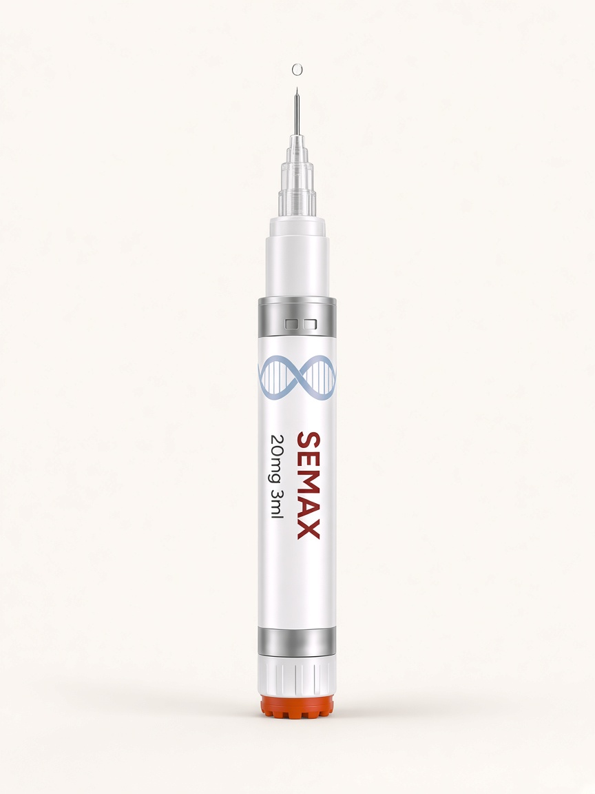
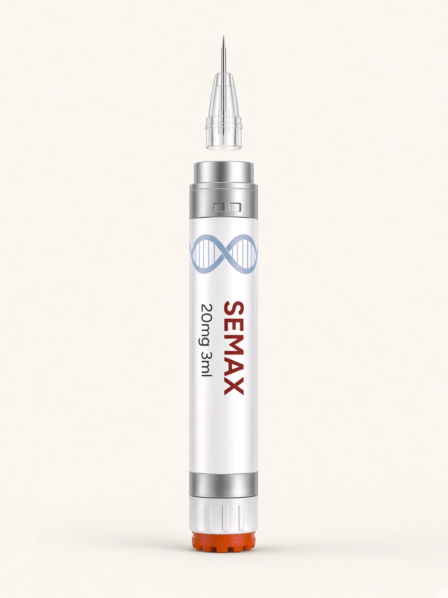
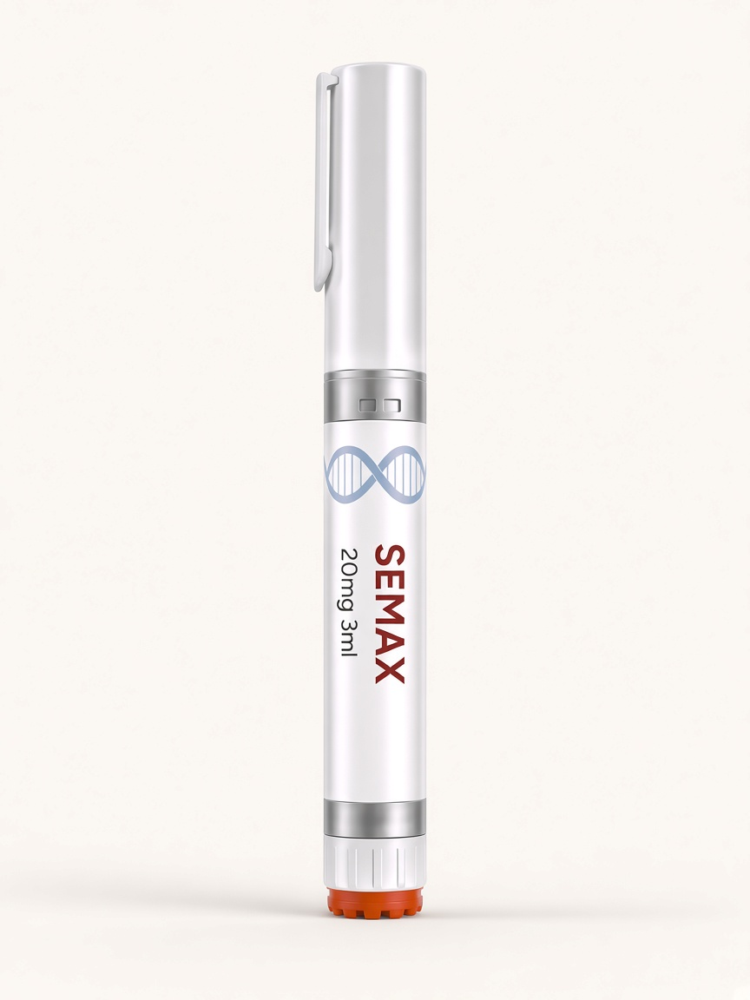
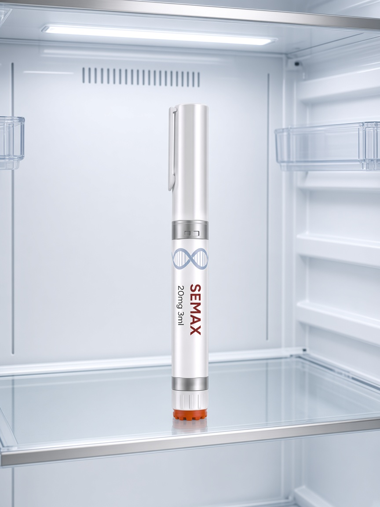

A prefilled research pen is already in solution. There is no mixing step. The pictures use the Semax pen on this site. The same eight steps apply to the other prefilled research pens. Read the label on the pen you are holding for the compound and the fill.
Keep the pen facing up from the moment the tip goes on until the tip comes off. The orange button stays at the bottom. The open end, and then the tip, point up.
-
1. Remove the cap
Lift the cap straight off the top of the pen.
-

2. Swab the pen top with an alcohol pad
Swab the open top. Let the alcohol dry before the tip goes on.
-

3. Install the pen tip
Install the pen tip on the top. Keep the pen facing up.
-

4. Select the amount of units
Turn the dial at the orange end. Each click is 1 unit. On the 3 mL pens, one click delivers 0.01 mL, and one dispense runs from 1 to 60 units. The peptide in that unit is printed on the pen. It is not the same from one compound to the next.
-

5. Dispense the research dose
Press the orange button to dispense the research dose. Keep the pen facing up.
-

6. Remove the pen tip
Remove the pen tip while the pen is still pointing up. Put the used tip in a sharps container.
-

7. Place the cap back on the pen
Seat the cap on the top of the pen.
-

8. Place the pen back in the refrigerator
Return the capped pen to the refrigerator, 2–8°C. Do not freeze a pen that is already in solution. More storage detail is in the storage guide.
Research use only. This is a handling sequence for laboratory dispensing. It is not a dosing chart and it is not instructions for administering a product to a person or an animal. Palm Beach Vitality products are not for human or veterinary use.